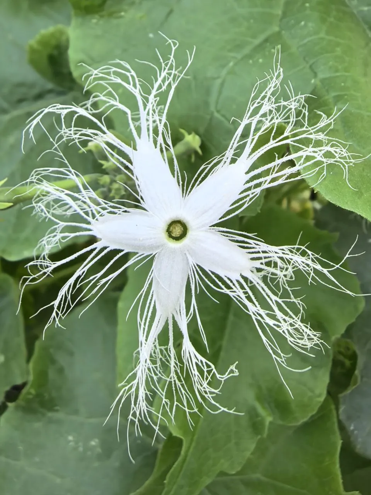
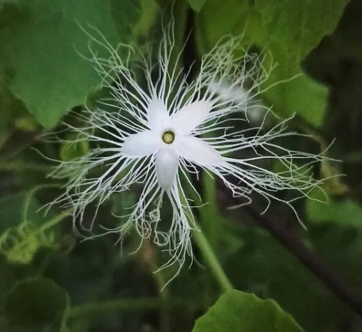
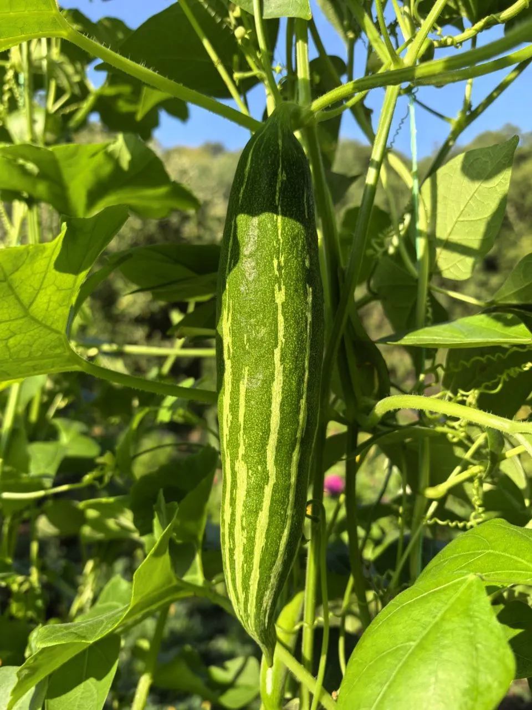
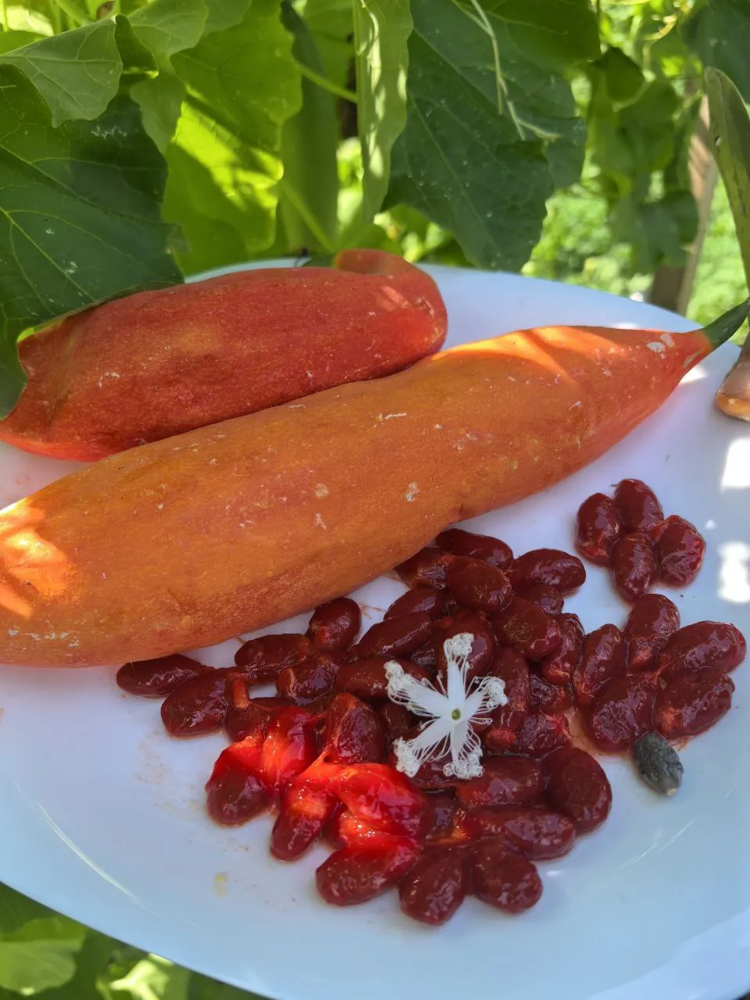
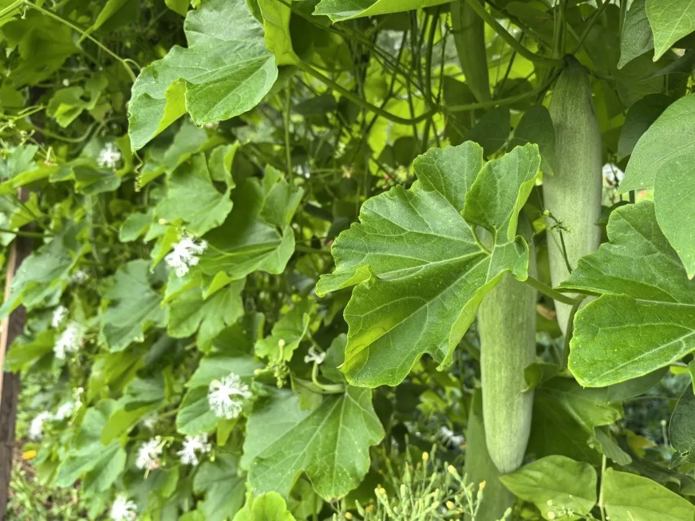

Удивительная однолетняя лиана с плодами длиной до 1 метра и ароматными цветами, напоминающими жасмин. Вкус плодов — хрустящий огурец с нотками сладкого редиса.
Преимущества культуры для вашего участка.
Каждый сорт уникален — от формы до вкуса.
Трихозант в разные сезоны: от всходов до сбора урожая.





Всё, что нужно знать о культуре: от посадки до хранения.
Трихозант — экзотическая лиана, которая привлекает внимание необычными плодами и ароматными цветами.
Вкус плодов напоминает хрустящий огурец с нотками сладкого редиса. Молодые плоды наиболее вкусны в свежем виде.
Да, трихозанту обязательно нужна опора. Это лиана длиной 3–4 м, которая отлично подходит для озеленения беседок, арок и пергол.
Да, через рассаду. Семена высевают в апреле, высаживают после прогрева почвы. Важно выбрать солнечное место, защищённое от ветра.
Цветение начинается в середине лета. Цветы белые, диаметром около 4 см, с длинными нитевидными отростками. Особенно ароматны вечером.
Посадочный материал из коллекции Batatchudo и рекомендации по выращиванию.